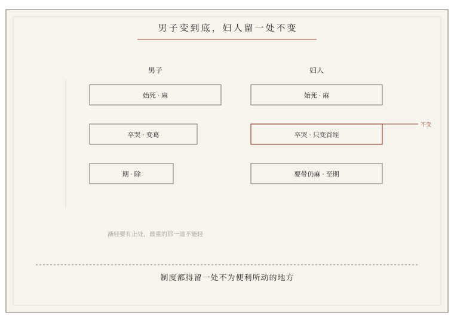

檀弓上 · 三·九十八 · 第 301 课
妇人不葛带。
说什么事：妇人服丧，腰带不用葛。
落在哪一层：变服之节。论「轻首重要，质者不变其重」。
为何编在此位：上三课论葬地、论藏、论封，皆在外；此课转入服制之内的细节，由外而内，始及「变」与「不变」。
【经】婦人不葛帶。
【注】婦人質，不變重者，至期除之，卒哭變絰而已。
【疏】此论齐斩妇人带要绖也。葬后卒哭，变麻易葛，而妇人重要而质，不变所重，故不葛带；至期除之，卒哭直变绖而已。大功以下轻，至卒哭并变为葛，与男子同。绖，首绖也，妇人轻首重要故也。
妇人 此指服齐衰、斩衰之妇人，即丧主之妻、女等。
葛带 用葛做的腰带。丧服变服，卒哭之后男子之带由麻易葛。
质 注「妇人质」。质，朴、实、不文。与「文」相对。
重 注「不变重者」。重，指最重要的一道（要带）。妇人以要（腰）为重。
期 一年之丧服。至期除之，即满一年才除。
卒哭 葬后之祭，至此哀渐有节。
绖 丧服中的麻带，此特指首绖（头上的麻带）。注「卒哭变绖而已」，谓只变首绖。
妇人服丧，腰带不用葛。
此节只有五个字，注十四个字，疏三十余字，三层意思都是关于「变」。
丧服变服有大节：葬后卒哭，男子由麻易葛——首绖变葛、要带变葛，一身麻换成一身葛，取其渐轻。妇人不同：卒哭之后，只变首绖，腰上的带仍旧是麻，一直到满期才除。
为什么？注给的理由是「妇人质，不变重者」。疏补得更清楚：妇人「轻首重要」——头为轻，要为重；最重要的一道，她不肯用葛去换。
所以此节的关节不在「妇人」二字，在「重」字。变服的原则是渐轻，而渐轻要有个止处：最重的那一道，不能轻。妇人守的正是这一处。
疏另有一句：「大功以下轻，至卒哭并变为葛，与男子同。」这是补充说明：妇人不变葛带，只就齐衰、斩衰这类重服而言；大功以下之轻服，妇人照常变葛，与男子一样。所以「妇人不葛带」不是一条通例，是一条有界限的例。
第一层 变服之理 丧服之变，是哀的递减在衣服上的刻度。始死麻绖，卒哭易葛，期而小祥，再期而大祥——每一步都轻一点。这个制度的高明处在于：它不要求人一直重，而是给人一条可以走下去的路。
第二层 「重」不可尽变 然而递减有个底。妇人之要带不变葛，就是把底留住了。若从头到脚全变，衣服就与常服无异，丧也就不成其为丧了。所以「不变重」不是保守，是立界：变到最后，仍要留一处不变，作为丧的凭证。
第三层 质与文的分派 注以「质」释妇人。礼家论男女，常以男文女质对举：男子之服处处有节文，妇人之服取其质实。此节正是这一分派的一处实例——妇人不是不懂变，是不肯把最重要的那一道也变成文。
这种分派有其时代的局限，读时当知；但其中有一层是可取的：任何制度，都要留一处不为效率与便利所动的地方。
第四层 与「轻首重要」的生理之喻 疏说妇人「轻首重要」。这是就服制之轻重立说（首绖轻、要绖重），后世注家或引申为妇人之体以腰为要。引申之说不可尽信，但服制本身的分量差别是清楚的：要带束身，是丧服之骨干；首绖加于头，是丧服之表记。
与今日何干 今人服丧，多穿黑衣数日，七日而毕。此节所问的是：你的丧服里，有没有一道是不变的？若全都可以替换、可以减省、可以按场合调整，那么它就不是丧服，只是深色的衣服。
| 左 | 右 |
|---|---|
| 妇人 | 所论之服者 |
| 不葛带 | 一事之不变 |
| 妇人质 | 注之由 |
| 轻首 | 可变 |
| 重要 | 不变 |
| 卒哭变绖 | 只变其一 |
| 至期除之 | 不变者除 |
| 大功以下 | 则变与男子同 |
画一处丧次之内，视点平视。画面中央并立二人：左为男子丧服之形（只画衣形与腰带，不作人面），其腰带以浅色细纹表示葛；右为妇人丧服之形，其腰带以深色粗纹表示麻。二人腰间各以一道横带束住，两条带子一浅一深，质地不同。二人之间地上置一只陶盆，盆中清水。不写文字、不画人面细节。赭色只用在妇人腰间那道麻带的边缘，与男子腰间葛带的一个结。
